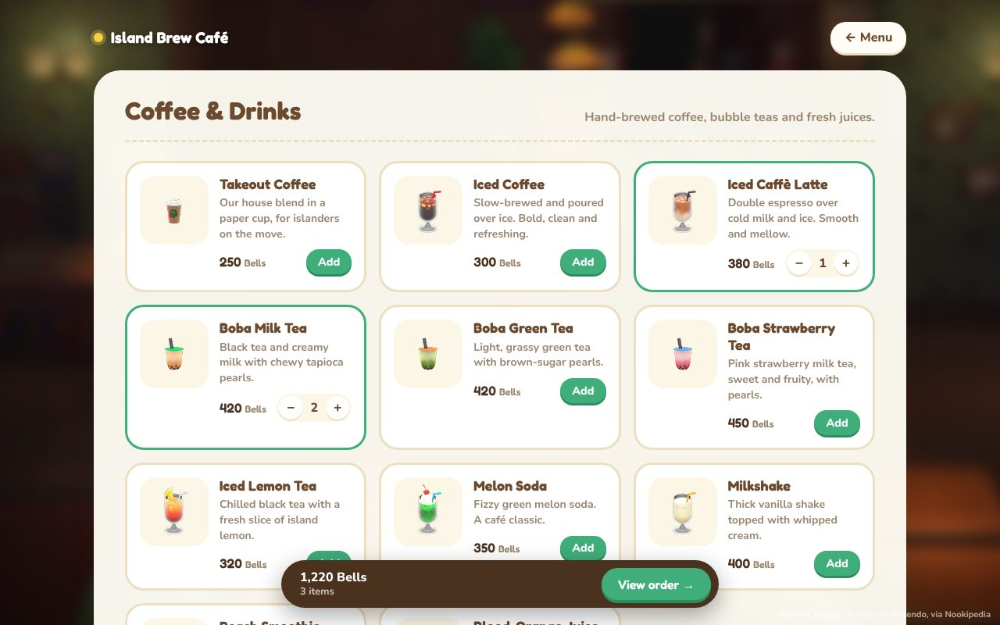
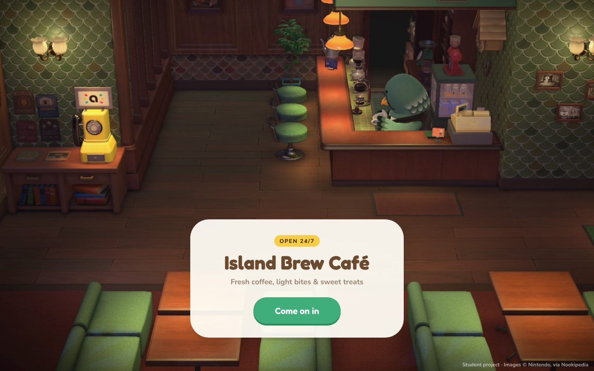
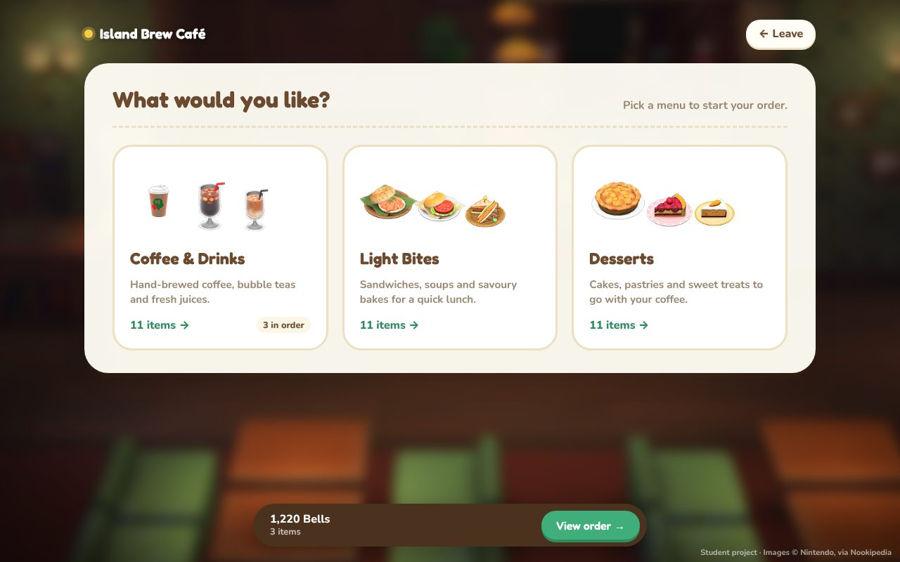
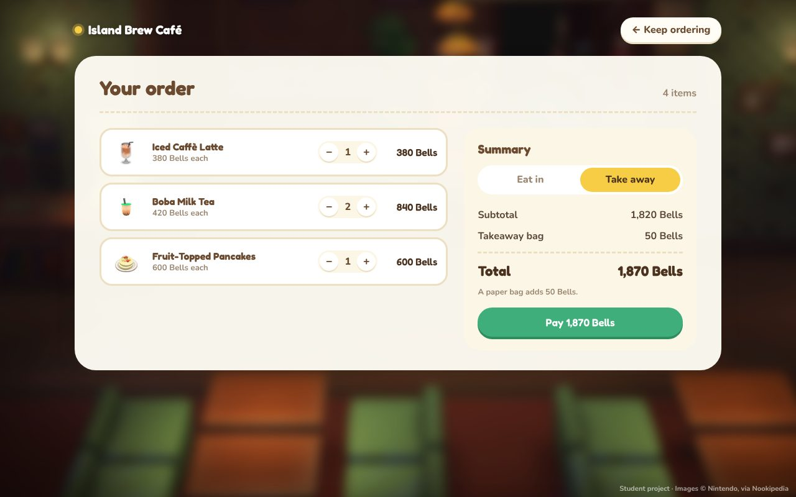
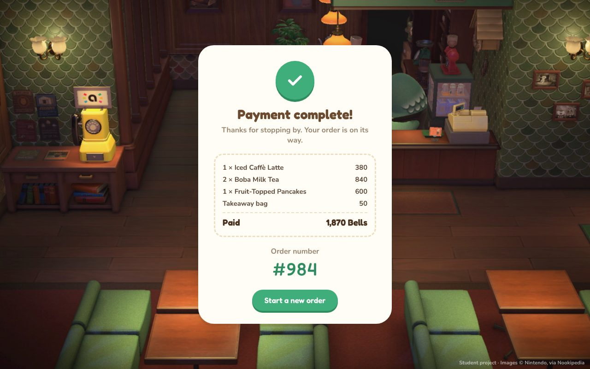
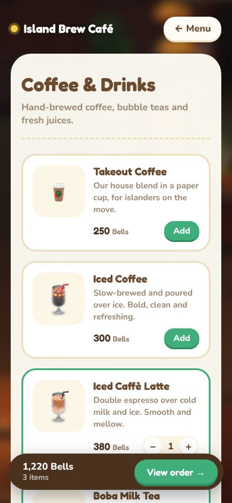

Island Brew Café: an interactive ordering website
A playful café website where customers can browse the menu, build an order, choose eat-in or takeaway and “pay” — all running in the browser with plain HTML, CSS and JavaScript, no frameworks.

From walking in to paying
The whole site is one HTML page; JavaScript swaps between five “views”.

Welcome & loading
A welcome card over the café interior. “Come on in” plays a short loading animation with rotating messages (“Grinding the beans…”) and a progress bar.

Choose a menu
Three category cards are generated from the menu data, each previewing its first three items and showing how many are already in the order.
Build the order
“Add” turns into a − / + stepper and the card is highlighted. A floating bar keeps a live running total and item count, with a small “bump” animation on each change.

Check out
Quantities can still be changed here. An eat-in / take-away toggle adds a 50-coin bag charge and updates the total instantly.

Pay & get a receipt
A short “paying” overlay, then an itemised receipt with a random order number and the option to start a new order.
Under the hood
Three files of code: page structure, styling, and logic — plus one data file.
Data-driven menu
Every dish lives in menu-data.js as one line: image, name, price and description. The category cards, item cards, checkout lines and receipt are all generated from this data, so adding a new dish means adding one line — no HTML to touch.
// menu-data.js — one line per dish
["iced_caffe_latte", "Iced Caffè Latte", 380, "Double espresso over cold milk and ice."],
["boba_milk_tea", "Boba Milk Tea", 420, "Black tea and creamy milk with chewy tapioca pearls."],Simple, single source of truth for the order
The cart is a plain object mapping each item to its quantity. The total, item count, cart bar and checkout are all calculated from it, so they can never disagree.
const cart = {}; // id -> quantity
const count = () => Object.values(cart).reduce((a, b) => a + b, 0);
const total = () => Object.entries(cart)
.reduce((sum, [id, q]) => sum + ITEMS[id].price * q, 0);Other techniques
- Single-page navigation: one
show(view)function switches screens and changes the background mood (normal, soft blur, dark). - Event delegation: one click listener handles every “Add”, “+”, “−” and navigation button using
data-attributes, instead of attaching hundreds of listeners. - Re-rendering only what changed: when a quantity changes, only that item's card is replaced.
- Accessibility touches: descriptive alt text and
aria-labels on the − / + buttons.

Responsive layout
CSS Grid and three media queries let the menu go from three columns on desktop to a single column on a phone, and the checkout summary moves under the order lines on small screens. The floating order bar stays reachable with a thumb.
What I learned
- Separating data from presentation makes a site much easier to change.
- Keeping one source of truth for state avoids a whole class of bugs.
- Small details — loading messages, a bump animation — make an interface feel alive.
What I'd add next
- Save the order with
localStorageso a refresh doesn't empty it. - A small back-end and database for real orders and stock.
- Keyboard and screen-reader testing for full accessibility.
A non-commercial student project. The café theme and item artwork come from a video game; game images © Nintendo, sourced via Nookipedia.